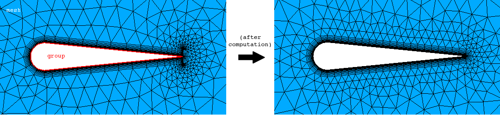

cfdmsh 4.0 documentation
cfdmsh 4.0 documentation cfdmsh 4.0 documentation


Creates submeshes on an edge group so as to prepare it for automatic viscous layer meshing.
The function explodes first the group into sub-edges and publishes them in the study tree. An offset is then created around each sub-edge. This offset is then discretized into a set of equidistant nodes, which are then orthogonally projected on the sub-edge. The positions of projected nodes are then used to set up a sub-mesh on this sub-edge.
Offset edges can be published by the user to check their orientation.
def MakeVirtualOffsetEdgeSubmeshes( thick_and_size, group_and_mesh = [None], np = 40, curv = True, rev = False, add = True, infa = False, dim = -1 ):

| Name | Description | Type | GUI selection [?] | Selection by name [?] | Recursive [?] | Default value |
|---|---|---|---|---|---|---|
| thick_and_size | The desired viscous layer thickness and the desired cell size along the edge. | List of 2 Floats | - | - | - | - |
| group_and_mesh | The input group and the mesh in which to create sub-meshes. | List of 1 Group of Edges + 1 Mesh |
yes | yes | - | [None] |
| np | See here. | Integer | - | - | - | 40 |
| curv | See here. | Boolean | - | - | - | True |
| rev | See here. | Boolean | - | - | - | False |
| add | See here. | Boolean | - | - | - | True |
| infa | See here. | Boolean | - | - | - | False |
| dim | See here. | Integer | - | - | - | -1 |
| dim Value [?] | single Value [?] | Type | Number | Name |
|---|---|---|---|---|
| 1 | - | Compound of Edges | 1 | "VirtualOffset" |
| -1 | - | - | - | - |
from cfdmsh import * # To adapt to the cfdmsh installation method
vertex1 = geompy.MakeVertex(0, 0.1, 0)
vertex2 = geompy.MakeVertex(-0.1, 0, 0)
vertex3 = geompy.MakeVertex(0, -0.1, 0)
vertex4 = geompy.MakeVertex(1, 0, 0)
arc = geompy.MakeArc(vertex1, vertex2, vertex3)
edge1 = geompy.MakeEdge(vertex1, vertex4)
edge2 = geompy.MakeEdge(vertex3, vertex4)
foil = geompy.MakeWire([arc, edge1, edge2])
foil = MakeFoilTrailingFillets(1e-3, foil, add = False)
circle = geompy.MakeCircleR(3)
domain = geompy.MakeFaceWires([foil, circle], isPlanarWanted = True)
AddToStudy(domain, "domain")
group = geompy.GetInPlace(domain, foil)
AddToStudy(group, "group", father = domain)
mesh = smesh.Mesh(domain)
algo = mesh.Triangle(algo = smeshBuilder.NETGEN_1D2D)
hypo = algo.Parameters()
hypo.SetMaxSize(30)
hypo = algo.ViscousLayers2D(0.05, 12, 1.2, group.GetSubShapeIndices(), isEdgesToIgnore = False)
virtual_offset = MakeVirtualOffsetEdgeSubmeshes([0.05, 0.05], [group, mesh], dim = 1)
MakeVirtualOffsetEdgeSubmeshes([0.05, 0.05], [group, mesh])
mesh.Compute()
-
cfdmsh 4.0 documentation
tougeron-cfd.com © 2016